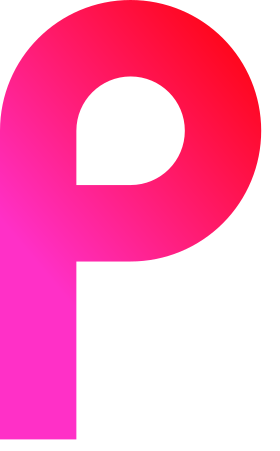

Twitter | Potabi Website | Fivnex | Discord | Email (potabi@fivnex.co)
| Title | Description | List of things needed | Status |
|---|---|---|---|
| Build Pinephone Prototype | Build a booting version of FreeBSD with a desktop environment. |
[ ] - Rudimentary image builder
|
Not complete |
| Port Lomiri to FreeBSD | Port the Linux-based Lomiri desktop environment to FreeBSD. |
[x] - Fork Lomiri
|
Not complete |
| Build Hazel desktop | Build the custom GTK4-based desktop environment by Fivnex. |
[x] - Design Hazel Desktop
|
Not complete |
| Get either Firefox or Dot Browser functioning | Firefox only in case Dot Browser isn't mobile ready by release. Both should be relatively easy to implement. |
[ ] - Get either browser working on the OS
|
Not complete |
Icon: 
Type: